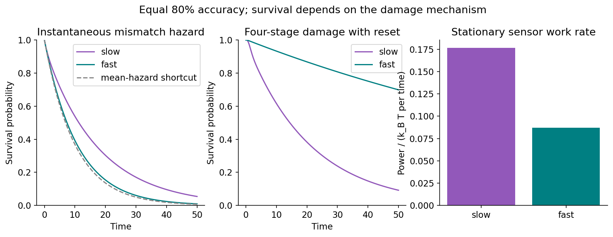
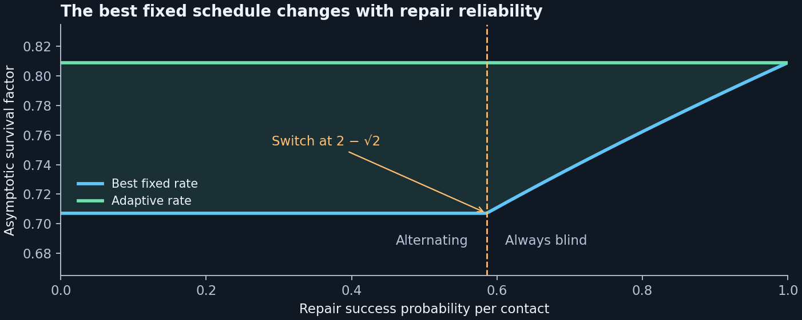
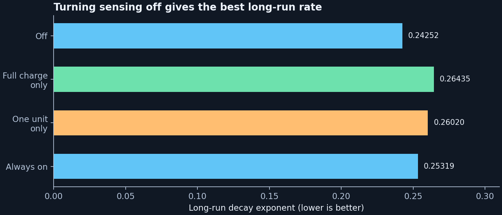
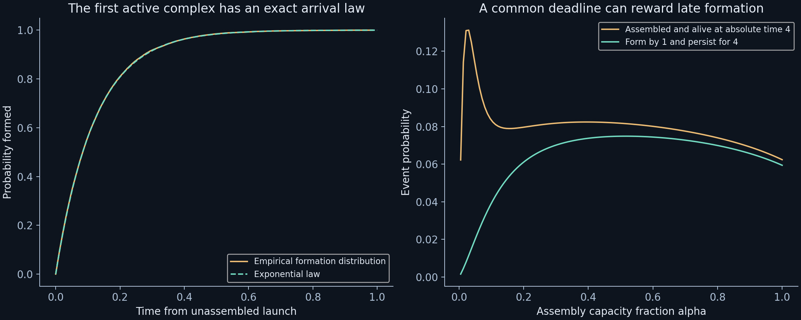

Information, energy, and the survival of designed systems
Latest continuum result: Validated Brownian continuum advantage at T=2. The spectator strategy beats every constant paid intensity in [0,1] at time two by at least 0.0110051 percentage points. The proof includes spatial Fourier tails, exact polynomial time integration, roundoff and a complete parameter-interval cover. Short-time and eventual long-time loss remain proved; the comparison is limited to the declared shared-resource model and constant-intensity class.
Looking for the stochastic calculus analysis? Open the mathematical chapter: the Brownian SDE, compensated reaction clocks, Itô formula, stopped martingale, backward survival equation and exact short-time proofs. Spatial model and numerical evidence · Lessons and novelty assessment.
This dossier makes five small mathematical models and their spatial maintenance and paid organization extensions inspectable by researchers unfamiliar with the project. It assumes graduate mathematics and physics, and introduces the chemical and biological vocabulary explicitly. The motivating question comes from the closing minutes of Tsimerman's Golden Gate Institute talk: could stronger mathematical reasoning make explanations travel across physics, chemistry, biology, and eventually questions of value? The user selected the physical cost of persistent purposeful behavior as a tractable starting point. Talk at 9:05 · Development journey · Spatial repair extension · Paid organization and thermal forces
Contents and navigation
- Abstract
- How to read and assess this dossier
- Chemical and biological vocabulary
- What crosses a boundary?
- Validated Brownian continuum advantage at T=2
- Paid autonomous organization: the next verified benchmark
- Latest extension: two-complex spatial repair
- Main results and the logic connecting them
- Study 01 — Thermal sensing, temporal errors, and effective survival
- Study 02 — Finite reserve and paid repair
- Study 03 — A common reserve for sensing, actuation, and repair
- Study 04 — Autonomous reactions and continuous-time failure
- Study 05 — Self-assembly and cooperative maintenance
- Certified numerical conclusions
- Evidence and reproduction receipts
- Literature comparison and novelty assessment
- Publication readiness and limitations
- References
Abstract
We investigate how temporal error structure, finite reserves, and control architecture determine survival in finite-state stochastic models. A thermal binary sensor yields an exact architecture-specific accuracy–power frontier and a reversal of survival ranking across effective damage laws. A reversible paid-repair model yields an attainable reserve frontier. A shared-reserve checkpoint device admits exact optimal survival, an adaptive sensing advantage, an accuracy threshold, and an explicit long-run rate gap from all fixed sensing schedules. A continuous-time autonomous network admits a certified finite-time advantage over constant sensing intensity, while its best binary asymptotic circuit leaves sensing off. A closed six-species network then forms active repair catalysts from monomers and finite fuel. It yields a sharp resource bound, an analytic single-complex optimum, and a certified interior optimum for cooperative assembly and maintenance. The results quantify architecture-dependent conditions for persistence. Molecular realization and biological validation remain open.
How to read and assess this dossier
Each study below contains its assumptions, mathematical derivation, construction or counterexample, figure, executable source, and numerical receipt. The proofs from the research notes are included in full. The final sections identify which ingredients are established in prior work, which exact results remain candidates for novelty, and what would be required before publication. Figures compare probabilities within the same study. Different studies use different dynamics and incompatible time units, so their percentages should not be compared as a common benchmark.
Chemical and biological vocabulary
Chemical potential is the free-energy change per additional particle of a species. A reservoir maintaining a chemical-potential difference can drive a reaction cycle away from equilibrium. A chemostat maintains concentrations externally. Study 04 uses a maintained fuel reservoir, with an internal battery limiting storage. Study 05 includes every fuel and waste molecule inside a closed chemical compartment, coupled to a heat bath.
Local detailed balance specifies the log ratio of forward and reverse rates from the entropy transferred to the environment. It constrains ratios, leaving kinetic barriers and absolute rates to be specified. Multiplying both directions of a reaction by the same catalyst or gate factor preserves that ratio. Our reaction networks stipulate those gates. A particular molecule, catalytic pathway, or mass-action construction implementing them has yet to be supplied.
Repair means a transition from a designated damaged state to a designated operational state. Survival is the probability of avoiding a specified failure set up to a time or round count. Homeostasis in biology refers to regulation of internal conditions. Self-assembly would require components to form the functional organization through their own dynamics. Studies 01–04 supply the functional organization at initialization or fabrication. Study 05 starts with monomers and forms its active repair catalysts through the declared reactions. This distinction is essential when interpreting a link to biology.
What crosses a boundary?
| Proposed crossing | Demonstrated achievement | Remaining gap |
|---|---|---|
| Mathematics to physics | Exact formulas and certified finite-state thermodynamic calculations | General many-body physical problems remain untouched |
| Physics to information | Rates and energy gaps determine accuracy, temporal errors, and sensing work | The physical architecture is restricted and largely drawn from established frameworks |
| Information to continued function | Proofs connect observations, reserves, actions, and first-passage survival | Failure and utility are externally specified |
| Physics to chemistry | Reversible reaction-like channels satisfy an explicit energy ledger | Study 05 specifies species and stoichiometry. Kinetic realization and experiments remain open |
| Chemistry to biology | A reaction network forms and maintains its own repair catalysts in Study 05 | Study 05 adds finite-inventory assembly and cooperative repair. Replication, membranes, and evolution remain open |
| Science to philosophy | Operational value of information can be quantified for a chosen task | No theory of love, subjective value, or consciousness follows |
The phrase “overcome a Tsimerman barrier” should be read as solving a declared toy crossing. The talk itself supplies no formal list of barriers, and these examples do not validate its broader forecast about the future of mathematics.
Validated Brownian continuum advantage at T=2
The spectator strategy beats every constant paid intensity in [0,1] at time two by at least 0.0110051 percentage points. The proof includes spatial Fourier tails, exact polynomial time integration, roundoff and a complete parameter-interval cover.
The comparison uses the original physical parameters, uniform dispersed start and four fuel molecules. A spectator-dependent reaction forms and maintains attraction without an external controller. Complete proof and evidence · Exact continuum comparison · Independent replay.

The earlier short-time theorem proves spectator loss for 0<t\le0.0008. The passive ground state has exact decay rate (7-\sqrt{17})/4; the spectator has a strictly larger decay rate and eventually loses. These statements coexist with a finite-horizon advantage when the certified time-two gap is positive. The result does not establish a molecular realization, a chemistry-to-biology transition, or confirmed publication priority.
Earlier continuum proofs and historical calculation · Residual theorem · Validated spatial arithmetic · Exact time analysis · Final verification
What do we learn, and what could be novel next? The result certifies a small continuum advantage within a specific family; it establishes no new general concept or chemistry-to-biology transition. The strongest proposed next step is a predictive mechanism theorem giving conditions for benefit and failure across a defined class of resource-matched reaction diffusions. Its novelty is unestablished. Full assessment, literature comparison and mathematical next-step specification.
Future work: 24 proposed projects distinguish assurance gaps in the completed study from mechanism theorems, stronger comparators, self-built repair machinery, compartments, scaling, replication, ecology, causal information and experiments. Each has a proposed deliverable and an acceptance or refutation criterion; novelty is unestablished.
Paid autonomous organization: the next verified benchmark
The system now starts uniformly dispersed and forms a finite-depth attractive interaction mode through reversible passive and fuel-paid reactions. Organization and repair share four fuel/waste molecules. A spectator-fuel reaction provides a local response to inventory without an external controller. Full model, stochastic calculus, proofs and visuals.
At the prespecified time two, the n=48 finite-grid certificate bounds the gap to the optimum over all constant paid-binding intensities alpha in [0,1] between 0.014604 and 0.014715 percentage points. The n=64 numerical values are 23.369977% survival for the candidate and 23.355279% for the fixed attaining sample. This is a small effect, not the earlier 23-point free-localization benefit.

There are 57 passing tests, 60,000 independent finite-lattice paths, 180,000 separate continuum SDE paths and stopped fuel/organization ledgers. The path precision cannot resolve the small policy gap; the interval certificate proves it for the stated finite grids. The subsequent validated Brownian comparison addresses the continuum error and the complete constant-intensity family. Removing the attractive well reverses the n=16 comparison, but that changes both force and binding energetics. An open-bath limit gives an exact no-advantage control when the spectator generator equals a fixed-family member.
The comparison is against best constant paid-channel intensity with shared other parameters, not all fixed organizations or molecular architectures. Real molecular recognition/fabrication costs remain unverified. The audit records 29 queries and 26 sources; no new general concept or established publication priority is claimed. Audit · Interval/path receipt · Continuum step check.
Latest extension: two-complex spatial repair
The five studies below now have a spatial maintenance extension. Two preassembled point complexes diffuse in a periodic cube, change between healthy and damaged states, and perform reversible contact-gated repair using finite fuel and waste. Fuel is fast-mixed; the larger repair partners have resolved positions. This is maintenance, with no assembly channels or adaptive sensing controller.
Read the complete spatial model, proofs, figures and verification. The original implementation plan records the preliminary calculation that motivated the comparison.
The count comparator matches each uniform-start forward repair mean while preserving its reverse equilibrium ratio. No survival curve is fitted. With one healthy and one damaged complex and four initial fuel molecules, the largest sampled survival gaps are:
| Spatial preparation | Maximum sampled gap from edge-calibrated count model |
|---|---|
| Uniform | 1.340 percentage points |
| Localized | 23.208 percentage points |
| Gate-weighted, corresponding to a reverse-repair event position law | 21.354 percentage points |
At time four, localized spatial survival is 9.718%, compared with 5.606% for the count comparator. All parameters are exploratory dimensionless choices, not biological measurements.

The exact short-time argument explains why preparation information cannot generally be compressed into fixed count rates. From the same healthy/damaged counts and fuel count b>0,
S_\mu''(0)=\eta\left(\frac32\eta+\kappa b\,\mathbb E_\mu g\right).
Different initial expected contact activity gives different survival curvature. One preparation-blind count model given the same chemical launch cannot reproduce both. This is an application of established generator methods, not a claimed new lumpability theorem.

Verification: 51 tests pass, including nine new structural and independent-reference checks. Four spatial refinements use 32, 48, 64 and 96 lattice points per axis; the largest final adjacent-grid curve change is 0.0000330 in absolute probability. Formal verification uses 200,000 continuous-space paths, with another 200,000 fresh-seed review paths retained separately. The formal 99% simultaneous sampling half-width is 0.008176. For localized HD, the confidence lower bound on the maximum gap from the fixed finest-grid-calibrated count curve is 22.24 percentage points. The uniform result does not establish a continuum gap above one point at that confidence level. Spatial refinement differences are not rigorous continuum error enclosures.
Numerical data · Formal verification · Fresh-seed check · Browser checks · Delivery integrity
Originality and barriers: the audit examined 28 queries and retained 20 source records, including direct precedents for spatial detailed balance, calibrated reversible rates and rebinding. This is a finite-inventory first-collapse benchmark; no new general concept is established. It does not overcome the chemistry-to-biology barrier. Molecular realization, spatial self-assembly, heredity and experimental validation remain open. The study has not isolated fuel depletion as the cause of the gap. Originality audit · Search and access-depth receipt
The existing manuscript/PDF covers Studies 01–05. The spatial report is a separate extension and is not presented as part of that manuscript.
Main results and the logic connecting them
The results use two meanings of time: the integer round count N in the checkpoint model and continuous duration T in the autonomous model. All energetic statements specify what is inside the accounting boundary. No molecular mechanism is assumed merely because a Markov edge has a thermodynamically admissible rate ratio.
Theorem A (finite-horizon checkpoint control). Under the supplied-phase protocol below, the Bellman recurrence gives the supremum survival probability over all admissible history-dependent, randomized controllers. A deterministic maximizing policy and maximum-rate repair attain it. The proof is conditioning plus induction, with repair reduced to a two-state master equation.
Theorem B (strict feedback value). For two rounds, perfect readout, initial reserve two, unit sensing and engagement costs, capacity and harvest at least two, and IID opportunity probability q\in(0,1), adaptive sensing strictly exceeds every precommitted sensing word whenever 0<\kappa<1. At q=\kappa=1/2 and capacity/harvest two the values are 7/8 and 3/4. With symmetric readout accuracy f, this instance has a strict advantage precisely for f>2/3. These constants belong to this architecture and parameter choice.
Theorem C (all-word asymptotic comparison). In the symmetric, perfect-readout, two-unit checkpoint model, the optimal adaptive and fixed-word survival root rates are
r_{\rm ad}=\frac{1+\sqrt5}{4},\qquad r_{\rm fixed}=\frac12\max\left\{\sqrt2,\frac{1+\sqrt{1+4\kappa}}2\right\}.
The upper bounds apply even to nonperiodic words chosen separately for each horizon. Matching stationary or alternating constructions attain the rates. The proof reduces the fixed problem to products of two nonnegative matrices plus bounded additive terms. Without harvesting, finite reserves give the same root rate 1-q(1-\rho) to both classes. Thus replenishment is essential to this example's exponential advantage.
Theorem D (certified autonomous instance). With the exact rational parameters and launch distribution specified below, one of 324 static binary circuits is uniquely optimal at T=4. It senses at full reserve only. Writing D=288230376151711744, its certified survival satisfies
\frac{153847617132986168}{D}\le S_{\rm winner}\le \frac{153847742532300097}{D}.
Every other binary circuit has survival at most 153763933422971466/D. Allowing a constant sensing activity anywhere in [0,1], with each actuator table reoptimized, gives the uniform comparator bound
\sup_{\alpha,\,\mathrm{table}}S_{\rm uniform}(4) \le\frac{145923831922267153}{D} <\frac{153847617132986168}{D}.
This is a certified gap of at least about 2.75 percentage points. Its proof combines nonnegative uniformization, outward integer rounding, and a rigorous interpolation remainder. The finite binary optimum is sharp within its declared class; the continuum upper bound need not be attained.
Theorem E (the large-time objective selects differently). Among the same binary autonomous circuits, the best reachable spectral decay exponent is attained with sensing off. The exponent is about 0.24252027, smaller than the best exponent with any sensing enabled. Exact positive-vector ratio bounds certify the ordering. This does not optimize all analogue circuits at infinite time.
Theorem F (formation of the maintenance machinery). In the closed six-species network of Study 05, the net assembly and repair counts obey J_A=h+d and J_A+J_R=N-b on every path. Reaching k complexes after r net fuel-consuming repairs therefore requires N\ge k+r. For 2\le k\le M, an explicit assembly and damage–repair sequence attains the count. An exact first-assembly/persistence formula and a single-complex calculus theorem give additional sharp bounds and attaining static designs.
Theorem G (a certified interior chemical design optimum). For two pairs and four fuel molecules, formation by time one followed by four units of persistence has globally optimal probability in [0.07486803450,0.07496800805]. Every boundary design has probability at most 0.07296461445. A rational design attains a lower bound within 10^{-4} of the continuum maximum. The complete parameter cover and its replay establish an interior optimum in the stated static kinetic family. Exact symbolic maximizing parameters and uniqueness remain open.
Information's survival value depends jointly on temporal error structure, resource state, fuel access, damage dynamics, and the horizon. In Study 05, the availability of assembled catalysts also determines whether cooperative maintenance can occur. The golden-ratio factor above comes from a two-state surviving reserve process. Detailed definitions and proofs follow.
Study 01 — Thermal sensing, temporal errors, and effective survival
Model boundary note: the derivation below retains the assumptions of this study. Statements about later extensions are historical and should be read alongside the subsequent studies.
Reference labels L1, L2, and L5 in this derivation refer to the original literature audit.

All logarithms are natural. Energy is measured in units of k_B T_bath, and all rates share a time unit. T denotes task duration, not temperature. These are statements within a specified model family, not universal laws of agency.
1. Physical system and boundary
An externally imposed binary signal X flips symmetrically at rate r>0. A thermal two-state memory M has energy E(X,M)=A 1[X != M], where A>=0. For fixed X, memory transitions correct a mismatch at rate a and introduce a mismatch at rate b. Parameterize
a=\frac{K}{1+e^{-A}},\quad b=\frac{K}{1+e^{A}},\quad a+b=K>0.
Thus log(a/b)=A, satisfying local detailed balance for the energy difference and a single thermal bath. K is a kinetic capacity (the sum of directional rates), not the stationary number of transitions per unit time. Raising K can require hardware resources; their construction/maintenance costs are not included. A separately specified K ceiling is essential to avoid treating arbitrary speed as free.
Changing X changes the memory's energy landscape. The external work source pays +A for a match->mismatch signal transition and receives A back for mismatch->match. The imposed signal's own generation cost is outside the boundary. The model assumes ideal recovery of negative work; a nonregenerative driver costs more. The four-state chain is a driven thermal sensor, not a passive equilibrium joint X,M system and not an autonomous organism.
Take the effective action to be M. Its failure consequences are supplied by an explicit reliability layer below. There is no separate physical actuator, energy-depletion mechanism, or thermodynamic repair mechanism in this release. Average external work is NOT a finite-battery survival guarantee. These exclusions prevent attributing physical self-maintenance to a model that has only an effective failure criterion.
2. Stationary sensing and energetic balance
Let Z=1[X!=M]. This aggregation is lumpable because rates do not depend on which of the two matching (or mismatching) states is occupied. Define
\begin{aligned}u&=r+b,\quad v=r+a,\quad s=u+v=2r+K,\\ q&=u/s,\quad d=1-2q=\frac{K\tanh(A/2)}{2r+K}.\end{aligned}
The unfailed stationary joint distribution is [(1-q)/2,q/2,q/2,(1-q)/2] in states 00,01,10,11. Its mutual information is
I=\ln 2+q\ln q+(1-q)\ln(1-q).
Net memory heat to the bath is A[a q-b(1-q)]. Stationarity gives a q-b(1-q)=r(1-2q), so
P=Ard.
This equals net external work, because the mean internal energy is stationary. In physical units multiply P by k_B T_bath. The total steady-state entropy production of the driven four-state process is P in k_B/time units. The two-state Z chain alone is reversible: computing entropy production after aggregating its distinct signal and memory channels would incorrectly erase the dissipation.
The memory's learning rate, as a contribution to the mutual-information derivative, is
\ell=rd\ln((1-q)/q)=2rd\operatorname{atanh}(d)\le P.
The inequality follows because A > 2 atanh(d) for r>0, finite K, and d>0. ell is not transfer entropy, and it is not the stationary derivative of total mutual information, which is zero. These are elementary specializations of established bipartite information thermodynamics [L1,L2,L5], not claimed discoveries.
3. Exact kinetic-ceiling frontier
For required accuracy at least 1-q_star with 0<q_star<1/2, put d_star=1-2q_star. Restrict to 0<K<=Kmax and finite A. Feasibility requires
d_\star<K_{\max}/(2r+K_{\max}).
At equality, only an infinite energy gap would reach the target. Below the threshold, exact target accuracy requires
A(K)=2\operatorname{atanh}[d_\star(1+2r/K)].
Proposition 1. In this family, minimum stationary sensor work to reach the target under K<=Kmax is
P_{\min}=2rd_\star\operatorname{atanh}[d_\star(1+2r/K_{\max})].
Proof. For fixed d>0 the atanh argument, hence P, strictly decreases as K increases. For fixed K, d atanh[d(1+2r/K)] strictly increases with d on its feasible domain. Therefore select d=d_star and K=Kmax. Substitution proves the formula. The displayed rates construct a sensor achieving it. At q_star=1/2, A=0 gives zero cost. QED.
As Kmax->infinity, Pmin approaches 2 r d_star atanh(d_star)=ell; positive accuracy at finite environmental rate still dissipates. This is a bound-and-construction result in a two-parameter family, not a bound over arbitrary sensors, memory sizes, protocols, or devices. Hardware costs can move the optimum away from Kmax.
4. Failure law H: instantaneous mismatch hazard
Given a trajectory Z(t), death occurs with rate delta+h Z(t), with h>=0 and baseline delta>=0. This is an effective killing law, not a microscopically derived damage mechanism. The live-state row subgenerator is
L=\begin{pmatrix}-u-\delta & u\\v & -v-\delta-h\end{pmatrix}.
For any initial mismatch probability q0,
S_H(T)=(1-q_0,q_0)e^{LT}(1,1)^\mathsf{T}.
Unless stated otherwise q0=q (stationary before failure selection). Conditional distributions among survivors are generally not stationary.
Feynman-Kac gives S_H(T)=exp(-delta T) E exp[-h integral_0^T Z(t) dt]. With stationary initialization Jensen implies
S_H(T)\ge e^{-(\delta+hq)T}.
Thus replacing the fluctuating hazard by its stationary mean is a lower bound on survival in this model, not an equality. The difference expresses survivor selection and exposure heterogeneity; it does not establish that an initially endangered individual benefits from slow sensing.
5. Exact tradeoff at fixed accuracy and fixed environment
The asymptotic decay exponent is
\lambda=\delta+\kappa,\qquad \kappa=\frac{s+h-\sqrt{(s+h)^2-4qsh}}{2}.
For numerical stability, use kappa=2qsh/[s+h+sqrt((s+h)^2-4qsh)]. For 0<q<1, s,h>0 the slow eigenvalue is simple and 0<kappa<qh. It is an asymptotic exponent, not finite-time failure probability.
Proposition 2. At fixed r, 0<q<1/2, and h>0, increasing feasible K while adjusting A to maintain q strictly reduces stationary sensor power but strictly increases the asymptotic decay exponent under failure law H.
Proof. Proposition 1 gives dP/dK<0 at fixed q. The root satisfies kappa^2-(s+h)kappa+qsh=0. The polynomial is positive at zero and negative at qh because its value there is -q(1-q)h^2. Hence 0<kappa<qh, and implicit differentiation gives
\frac{d\kappa}{ds}=\frac{qh-\kappa}{s+h-2\kappa}>0.
Since ds/dK=1, the claimed ordering follows. QED.
The statistical meaning is important: slowly changing trajectories include a subset that remains matched for a long time. This subset disproportionately supplies long-lived survivors. Faster mixing makes all trajectories sample mismatch more evenly. This is NOT a theorem that energy dissipation universally improves survival. It is a conditional tradeoff derived from a particular observation/preparation protocol and damage law. Its algebra uses standard finite-state spectral theory; literature priority for this combined statement is unestablished.
An informative local expansion, as h->0 at fixed s,T, is
\log S_H(T)=-\delta T-hqT+h^2q(1-q)\left[\frac{T}{s}-\frac{1-e^{-sT}}{s^2}\right]+O(h^3).
This follows from Cov[Z(0),Z(t)]=q(1-q)exp(-s|t|) and the cumulant expansion of integrated exposure. Stationary information fixes q but not s: temporal correlations enter reliability already at second order. The expansion is explanatory, not used as an exact numerical solver.
6. Failure law D: multistage exposure with reset
Use n sequential damage stages, each advancing at z=n/tau only while mismatched. Reaching the end kills; returning to match resets damage instantly. The live states are C,D0,...,D(n-1). Rates are C->D0=u, Di->C=v, Di->D(i+1)=z, and D(n-1)->death=z. Add delta to all killing rates if required. In an uninterrupted mismatch, lethal exposure duration is Erlang(n,z), with mean tau. Reset is an idealized effective process; its work cost is not included in P.
Initialize [1-q0,q0,0,...,0]: the sensor state can be stationary while the damage clock is freshly prepared. This is not a stationary population of pre-damaged individuals. S_D(T) is obtained by the same matrix-exponential formula. When n=1 this is exactly law H with h=1/tau. This equality is a transfer check, not an approximate analogy.
7. Constructive finite-time reversal
Hold r=0.1, q=0.2, T=20, delta=0. Two designs:
| quantity | slow sensor | fast sensor |
|---|---|---|
| K | 0.4 | 5.8 |
| A | 2.9444389792 | 1.4522523289 |
| accuracy | 0.8 | 0.8 |
| mutual information (nats) | 0.1927447570 | 0.1927447570 |
| work rate (k_B T/time) | 0.1766663387 | 0.0871351397 |
| S_H(20), h=0.5 | 0.3026456742 | 0.1534855473 |
| S_D(20), n=4, tau=2 | 0.3825722145 | 0.8678821885 |
The environment is identical in both designs; only the sensor kinetics and gap differ. A fixed instantaneous information level cannot rank survival. Improved sensor thermodynamic efficiency cannot provide a task-independent survival ordering. Both failure laws have the same mean lethal uninterrupted mismatch duration of 2. Their exposure-duration distributions differ (exponential versus four-stage Erlang); equality of means does not make them the same hazard. The statement is about the within-law ordering of the same sensor pair.
This counterexample is calculated by exact small-matrix exponentials and checked independently by Gillespie trajectories. It is a candidate research synthesis, not an established discovery of new physics.
8. Scope of the barrier crossing
The link demonstrated is: explicit microscopic rates and energy levels -> information and response times -> path-dependent effective failure probabilities. The model exposes what stationary information leaves out and supplies an exact restricted physical cost frontier. It does not yet close the reverse loop in which energy reserves, repair, or actuator degradation change the sensing dynamics. Adding that loop, with local detailed balance throughout, is the next substantive research problem.
Study 02 — Finite reserve and paid repair
Model boundary note: the derivation below retains the assumptions of this study. Statements about later extensions are historical and should be read alongside the subsequent studies.

Figure data · Reproduction script
Study 01 motivates a new checkpoint model with a finite battery and a reversible repair reaction. This study proves an attainable survival frontier for that class of protocols and shows that battery size alone can reverse a survival ranking. All energies below are in units of k_B T.
Physical model and protocol
A device has a binary stress flag Z, a damage bit D, and an integer battery level b between 0 and B. The initial battery level is B and the device starts healthy (D = 0). A round has an exposure interval of length Δ, a load operation, and a repair contact of length τ. Failure occurs at the first end-of-contact checkpoint with D = 1. A healthy device with zero remaining battery stays operational until it needs a repair.
- During exposure, Z evolves independently of the repair device. For a physical realization, use a thermal two-state switch with transition rates 0 → 1 at q s and 1 → 0 at (1 − q)s, and energy difference E₁ − E₀ = ln((1 − q)/q). These rates satisfy local detailed balance. Start with P(Z = 1) = q. The sampled chain has correlation multiplier ρ = exp(−sΔ). It has exactly the same sampled mismatch law as the stationary Study 01 sensor at the same q and s. The thermal switch is one realization of the flag. Using the original driven sensor instead would require supplying its work separately.
- Freeze Z during loading and repair. The load operation applies the reversible permutation (Z,D,b) → (Z,D XOR Z,b) to a degenerate damage bit. On a surviving path this creates damage precisely at stressed checkpoints. The operation is an ideal prescribed, energy-neutral gate in this model. The flag is preserved and no damage bit is erased at a checkpoint.
- Only when Z = 1, the repair contact opens the pairs (D = 1, b) ↔ (D = 0, b − 1) for b ≥ 1. A forward repair lowers battery energy by ε and releases ε to the bath. Its reverse recreates damage, restores one unit to the battery, and absorbs ε from the bath. For jumps during contact, ΔE = −Q_bath, and log(k_forward/k_reverse) = ε. If the quanta vary with battery level, replace ε with the energy gap for the pair. The isolated damaged state at b = 0 has no repair transition.
An admissible protocol changes the sum γ(t) of the forward and reverse repair rates in each pair, subject to 0 ≤ γ(t) ≤ Γ. The rate ratio stays fixed by the energy gap. Both states of a pair share the same prescribed barrier schedule. The schedule can depend on the pair and on information available at the start of a round. Within-contact feedback that latches the first successful repair would require additional states or a controller and lies outside the class. Phase timing and barrier switching are ideal external operations. The energy bound is for the initial battery above its empty state, with the device and clock supplied. Failure is a first-passage event in the analysis and requires no physical absorbing jump or erasure.
Theorem 1 — Exact survival frontier
With a fixed quantum ε > 0, put
a=1-e^{-\Gamma\tau},\qquad \kappa=a\sigma(\epsilon),\qquad \sigma(x)=\frac1{1+e^{-x}}.
Let M count the stressed checkpoints among N rounds of the exogenous flag trajectory, including its continuation after any device failure. Among all admissible protocols, the maximum probability of surviving all N rounds with B initial units is
S^*(B)=\sum_{m=0}^{\min(B,N)}\Pr(M=m)\kappa^m,
where the sum stops at N if B exceeds N. Opening every repair pair at the full rate ceiling throughout each contact attains this bound simultaneously for every B and N. The minimum initial energy for target survival η is ε times the smallest B with S(B) ≥ η. If S(N) < η, additional units of the same quantum cannot reach the target.
Proof. Starting damaged in a fueled pair, let p(t) be the probability of being healthy at time t. Local detailed balance gives forward and reverse rates γ(t)σ(ε) and γ(t)[1 − σ(ε)]. Thus p′ = γ(t)[σ(ε) − p] and p(0) = 0. Integration gives
p(\tau)=\sigma(\epsilon)\left[1-e^{-\int_0^\tau\gamma(t)\,dt}\right]\le\kappa.
At a stressed checkpoint, ending healthy spends exactly one battery unit, even if many forward and reverse jumps occurred. Unstressed checkpoints leave the device healthy without spending a unit. Condition on a complete flag path with M = m. Sequential conditioning on survival at earlier checkpoints bounds its probability of survival by κ^m if m ≤ B, or zero if m > B. Under the constant maximum schedule every factor equals κ. Averaging over flag paths proves the formula and the matching construction. This argument uses no independence assumption between successive stress flags.
Theorem 2 — Sharp energy when the stress count is fixed
Allow arbitrary positive battery gaps and let F be the initial battery energy above empty. Conditional on m ≥ 1 stressed checkpoints, every admissible protocol satisfies
\Pr(\mathrm{survive}\mid M=m)\le[a\sigma(F/m)]^m.
When F > 0, a battery with exactly m equal gaps F/m and the maximum-rate schedule attains the upper bound. Thus unequal allocation of the same stored energy cannot improve survival for a fixed number of repairs.
Proof. When m repair pairs are available, let ε₁, …, εₘ be the gaps of their successive forward transitions. Their sum is at most F. The conditional product is bounded by a^m ∏ σ(εᵢ). The function log σ(x) is increasing and strictly concave, with second derivative −σ(x)[1 − σ(x)]. Jensen's inequality gives the bound, with equality for m equal gaps that exhaust F. If fewer than m pairs are available, survival is zero.
For a target η above (a/2)^m and below a^m, the exact minimum F is m log[p/(1 − p)], where p = η^(1/m)/a. At or below (a/2)^m the infimum is zero when strictly paid transitions are required. At or above a^m the target is infeasible with any finite battery. For example, three certain stresses, Γ = 2, and τ = 1 require 5.2542045 k_B T to reach 40% survival. The construction uses three equal quanta of about 1.7514015 k_B T.
The energy theorem conditions on a fixed stress count. It does not solve the allocation problem for arbitrary gaps when the count is unknown. Theorem 1 gives an unconditional frontier for fixed-quantum batteries.
A reserve-dependent ranking reversal
For N = 2, the count distribution at fixed stationary q has a simple dependence on the checkpoint correlation ρ:
\begin{aligned}p_0&=(1-q)^2+q(1-q)\rho,\\p_1&=2q(1-q)(1-\rho),\\p_2&=q^2+q(1-q)\rho.\end{aligned}
Hence the derivatives of S*(B) with respect to ρ for B = 0, 1, and B ≥ 2 are q(1 − q) times 1, 1 − 2κ, and (1 − κ)², respectively. Whenever κ > 1/2, faster mixing lowers optimal survival with zero battery, raises it with one unit, and lowers it again with at least two units. With one unit, two clustered stresses exhaust the reserve, and one isolated stress can be repaired. This is an analytic ordering for 0 < q < 1 and κ > 1/2 under the two-round protocol.
Take q = 0.2, Δ = τ = 1, ε = ln 9, and Γ = ln 10, which give κ = 0.81. Use the two mixing rates from Study 01, s = 0.6 and s = 6:
| Initial battery | Slow stress dynamics | Fast stress dynamics |
|---|---|---|
| 0 units | 72.78% | 64.04% |
| 1 unit | 84.48% | 89.90% |
| 2 units | 92.86% | 92.55% |
The fast design reaches 88% survival with one unit. The slow design needs two. Both have the same marginal stress probability and identical repair kinetics, energy per repair, and checkpoint protocol.
Reproduce and scope
python scripts/run_reserve_study.py
The tests compare the count-based formula against a separate full-state matrix exponential on (stress, damage, reserve), including both directions of every repair edge and the projection at each checkpoint. They also check local detailed balance, a throttled schedule, target inversion, and the ranking reversal. The phase protocol is driven. The constructive result leaves open the autonomous case where sensing and actuation draw from the same reserve, action changes fuel access, and operation can fail between checkpoints. Literature priority for these results has not been established.
Background on the thermal jump accounting appears in Seifert's review.
Study 03 — A common reserve for sensing, actuation, and repair
Model boundary note: the derivation below retains the assumptions of this study. Statements about later extensions are historical and should be read alongside the subsequent studies.
A finite battery funds sensing, actuation, and reversible repair. Correct actuation can move work from a finite environmental packet back into the battery. For the specified checkpoint architecture, we derive the exact survival probability attainable from each initial reserve. We then give a two-round family with a strict feedback advantage, an exact noise threshold, and a case where feedback improves the exponential rate of survival over every precommitted sensing schedule.
1. One reserve, with feedback through the environment

A healthy device starts a round with b\in\{0,\ldots,C\} units in its battery. A unit has energy \epsilon k_BT. The hidden binary environment X has stationary probability q of state 1. That state makes a work packet accessible to an engaged actuator. From one round to the next the transition law is
P(X=1\mid X_{\rm prev}=j)=q(1-\rho)+\rho j,\qquad j=0,1 .
The launch prior is q when the previous state is unknown. The parameter \rho\in[0,1] measures persistence. For 0<q<1 and 0<\rho<1, a thermal two-state switch realizes this law by relaxing for time \Delta with total rate -\log(\rho)/\Delta and energy gap k_BT\log((1-q)/q). The IID case uses fresh equilibrium flags. The flag is held fixed from sensing through repair. Endpoints with degenerate probabilities can be read as preparations or limits of these switches.
- Sense or skip. A probe pays c\ge1 units into an isolated work receiver and reveals a bit Y with P(Y=X\mid X)=f\in[1/2,1].
- Idle or engage. Idle is action A=0, which has no work bill. Engagement is A=1 and pays d\ge1 units, regardless of the environment. This bill is due before any harvesting. If X=A=1, transfer up to H units from the external packet into the battery, stopping at capacity. A match with X=A=0 transfers nothing.
- Repair a mismatch. The load permutes the degenerate damage bit by D\mapsto D\mathbin{\mathrm{XOR}}[X\ne A]. During mismatch, the contact opens the reversible pair (D=1,b,R=0)\leftrightarrow(D=0,b-1,R=1) for b\ge1, with R a repair receipt. Forward repair releases \epsilon k_BT as heat. Its reverse absorbs the same heat, restores the battery unit, and clears the receipt. With a sum-of-rates ceiling \Gamma and contact duration \tau, the maximum probability of ending this contact healthy is \kappa=(1-e^{-\Gamma\tau})/(1+e^{-\epsilon}), as in Study 02.
- Check the damage bit. The first damaged checkpoint ends operation. The experiment tolerates a healthy checkpoint at zero reserve. On a surviving path the work receipts reveal the previous X by X=A \mathbin{\mathrm{XOR}} R. This reveals past conditions through the consequences of action, with current conditions hidden until the next probe or checkpoint.
Microscopic accounting and admissible control
A powered gate can be an ideal energy-conserving swap on the device plus its work registers. For example, with an initially empty sensing receiver w_s, an energy-degenerate readout bit y=0, and a noise bit e with P(e=1)=1-f, swap the two states
(b,w_s=0,y=0,X,e)\leftrightarrow (b-c,w_s=c,y=X\mathbin{\mathrm{XOR}}e,X,e).
Each allowed pair preserves total energy and the non-overlapping receiver levels make the transformation reversible. The engagement bill can be transferred by the corresponding swap with the actuation receiver. Its nonzero level is the action receipt. The harvest swap retains the residual packet energy, so the reverse is well defined even when capacity clips the transfer. The two-state noise bit can have a thermal bias with gap k_BT\log(f/(1-f)), and serves only as an unchanged control. After the action, the same XOR uncomputes Y from the preserved X,e and the probe receipt. The ideal perfect probe uses e=0. Repair rates have ratio k_+/k_-=e^\epsilon, consistent with the energy difference of the full repair pair. Work receivers retain their records. No step erases an unknown readout or automatically recharges a spent battery.
On each surviving round the pathwise ledger, in units of \epsilon k_BT, is
b'=b-c\,\mathbf1_{\rm probe}-d\,\mathbf1_{\rm engage} +h_{\rm admitted}-\mathbf1_{\rm repaired}.
Repeated forward and reverse repair jumps cancel except for the final net transition. Lost reserve moves into the work receivers or the bath. Admitted work comes from the explicit packet, and rejected work remains there. The two powered gates have prescribed positive work bills. These are properties of the stipulated task hardware. Externally supplied components are the phase clock, prepared receivers and receipt registers, thermal flags, and packets. The bound below is on the initial operating battery given those resources. It imposes no price on building the apparatus or on maintaining the clock and receipts. The controller has access to reserve and receipts, and has no current X input except the paid readout. The environment still couples physically to the actuator and damage gate. The IID proofs need no previous-state receipt in the control policy.
2. Sharp survival frontier and attaining control
Let V_n(j,b) be the best survival probability with n rounds left, prior index j, and reserve b. Index j=\ast denotes a stationary launch. The base is V_0=1. For any nonnegative continuation v(j,b), define G_v(x,a,r) for the paid or unpaid battery r immediately before actuation. Action a is admissible when r\ge da. Let z=r-da. The four live-outcome rules collapse to
G_v(x,a,r)= \begin{cases} v(x,\min(C,z+aH)) & x=a,\\ \kappa\,v(x,z-1) & x\ne a,\ z\ge1,\\ 0 & x\ne a,\ z=0. \end{cases}
Write p_j(x) for the current prior and L_f(y\mid x) for the symmetric readout likelihood. Maxima range only over affordable actions. The exact Bellman update is
\begin{aligned} B_v(j,b)&=\max_a\sum_x p_j(x)G_v(x,a,b),\\ P_v(j,b)&=\sum_y\max_a\sum_x p_j(x)L_f(y\mid x)G_v(x,a,b-c),\quad b\ge c,\\ V_{n+1}(j,b)&=\max\{B_{V_n}(j,b),P_{V_n}(j,b)\}. \end{aligned}
Omit the probe option when b<c. The max in the blind branch comes before knowing X. In the probe branch, the max occurs separately for each observation. These are joint probabilities of (x,y), so no division by a possibly zero observation probability is needed.
Proof of both directions. Given a mismatch, every permitted contact schedule ends healthy with probability at most \kappa. Its only live outcome has the same battery and inferred x, irrespective of the contact schedule. The maximum-rate contact thus dominates for every nonnegative continuation. Once a round survives, the next prior depends only on its inferred x and the remaining battery. Conditioning on the available information bounds each possible decision by the corresponding maximum. Induction from V_0=1 bounds arbitrary history-dependent or randomized controllers. Conversely, store the maximizing mode and action for each entry of the table and use the maximum-rate repair contact. Every step of the induction attains equality. The adaptive frontier uses O(NC) time and space. Monotonicity in b follows by induction since the live branch maps are nondecreasing in remaining reserve and additional reserve only adds affordable actions. For target \eta, invert V_N over b=0,\ldots,C to obtain an exact minimum initial battery or infeasibility.
A strong fixed-schedule comparator
A fixed sensing schedule is any length-N binary word chosen before the first round. It still gets optimal feedback for actuation, including the current readout on scheduled probe rounds. If the scheduled probe is unaffordable it falls back to blind action, which gives the comparator a more favorable rule than failing on the spot. Allowing it to electively cancel an affordable scheduled probe on depleted paths would make its sensing decision a feedback rule.
Each word composes monotone maps B,P with the fallback. We compute the maximum over all words, including nonperiodic schedules. The implementation prunes a suffix only if another suffix dominates its entire vector of continuation values. Applying any common prefix preserves that dominance. The comparison is exact. In the worst case the number of undominated vectors is exponential. Randomizing over fixed schedules cannot exceed their maximum.
3. Exact separation after two rounds

Set c=d=1, H\ge2, C\ge2, and start with b=2. Take IID flags with q\in(0,1), perfect sensing, and \kappa\in(0,1). The optimal last-round survival with 0, 1, or at least 2 units is 1-q,m,1, where m=\max(1-q+q\kappa,q). At one unit skipping the probe is strictly best because spending it leaves only the possibility of a correct idle. At two or more units a probe is strictly best because blind action has positive mismatch probability and \kappa<1.
Probing first and acting on the readout gives A=(1-q)m+q. The two possible blind alternatives give S_0=1-q+q\kappa m and S_1=q+(1-q)^2\kappa. We have A>S_1 because m>\kappa(1-q). If m=1-q+q\kappa, then A-S_0=q^2(1-\kappa^2)>0. If m=q, then A-S_0=3q-1-(1+\kappa)q^2. The latter is concave on [1/(2-\kappa),1], where at the left endpoint it agrees with the positive first expression and at the right endpoint it equals 1-\kappa>0. Thus probing first is strictly required. The unique optimal action after the probe matches the flag. Each flag has positive probability, and the resulting reserves require opposite probe decisions on the next round. A fixed schedule cannot attain A, even if it optimizes every actuation decision. The strict separation holds over the whole open (q,\kappa) parameter family.
For the symmetric instance q=\kappa=1/2, C=H=2, choose \epsilon=\ln3 and \Gamma\tau=\ln3 to realize the repair probability. The four fixed schedules 00,01,10,11, with 1 denoting probe, attain 9/16,5/8,3/4,3/4. The adaptive optimum is 7/8. With capacity two, the adaptive controller reaches 80% using 2\ln3\,k_BT of initial battery and every fixed schedule falls short even at full charge.
4. Noise and persistence

The zero-information limit f=1/2 makes the probe dominated by skipping. The readout supplies only an independent coin and spending its work cannot increase the optimal nondecreasing continuation. Increasing f cannot lower the optimal survival of either policy class. A better symmetric channel can be degraded to a worse one using an independent random flip after paying the same sensor bill, and the optimized controller dominates that simulated strategy. The same reasoning applies to the fixed comparator word by word.
For the symmetric two-round instance with IID flags, the adaptive advantage is strictly positive exactly when f>2/3. In the last round, one unit always favors skipping. At two units, after probing, the posterior \theta=P(X=1\mid Y) gives live probabilities 1-\theta/2 for idle and \theta for engagement. The two equally likely posteriors are f and 1-f. The optimized last-round survival at two units is therefore 3/4 for f\le2/3 and (1+3f)/4 above it. Below or at the threshold, a fixed second-round skip can realize the adaptive result for any first-round choice.
Above the threshold, an optimal first-round skip uses idle strictly and reaches both one and two units on live paths. If the first round probes, idle after Y=0 and engagement after Y=1 are the unique maximizing actions. The branch with X=Y=0 reaches one unit, and X=Y=1 reaches two. In either case the final probe decisions conflict. For f>2/3, subtracting the first-round blind value from its probe value gives 3f^2/8-3/16. Consequently the first-round probe is strictly favored only above 1/\sqrt2, with a tie there. For f\le2/3, the first-round probe value is no greater than its value at 2/3, which is below the blind value.
Persistence changes the posterior before any costly probe. The same Bellman proof applies because live work receipts distinguish the preceding flag. At f=0.9,\rho=0.5 the symmetric example still gains 2.8125 percentage points in two rounds. The heatmap is a numerical illustration of the exact finite-state recurrence. The IID threshold above is proved analytically.
5. Exact long-horizon rate separation
Keep the symmetric IID instance with perfect sensing, C=H=2, and start at full charge, but allow any repair success probability 0<\kappa<1. Let a_N be optimal adaptive survival and s_N the largest survival of any length-N precommitted schedule. Then
\lim_{N\to\infty} a_N^{1/N}=\frac{1+\sqrt5}{4},\qquad \lim_{N\to\infty} s_N^{1/N} =\frac12\max\!\left(\sqrt2,\frac{1+\sqrt{1+4\kappa}}2\right).
These are survival factors per round on an exponential scale. Adaptive sensing wins strictly for every 0<\kappa<1. Alternating fixed probe and blind rounds attains the fixed rate below \kappa=2-\sqrt2. Always acting blind attains it above that threshold. Both attain it at equality. The survival ratio grows exponentially while both absolute survival probabilities tend to zero.

Adaptive upper bound and construction. Let v=(x,y,z) list continuation values at reserves 0, 1, 2. When 0\le x\le y\le z, the blind and scheduled sensing maps are
B(v)=(x/2,\max(y/2+\kappa x/2,z/2),z/2+\kappa y/2),\quad P(v)=(x/2,x/2,(y+z)/2).
Each preserves the ordered nonnegative cone. With r=(1+\sqrt5)/4, take u_0=\min(1,(2r-1)/\kappa)>0 and w=(u_0,1,2r). Then \max(B(w),P(w))\le r w componentwise because \kappa u_0\le2r-1 and 2r^2=r+1/2. The inequality \mathbf1\le w/u_0, order preservation, and homogeneity give a_N\le(2r/u_0)r^N. For the lower bound use a stationary policy. With two units, probe and match the environment. With one unit, engage blind to try to replenish. On reserve states 1 and 2 its live matrix is \bigl(\begin{smallmatrix}0&1/2\\1/2&1/2\end{smallmatrix}\bigr) with eigenvalue r and positive right eigenvector (1,2r). Since (1,2r)/(2r)\le\mathbf1, starting at two units attains at least r^N. The attaining stationary policy uses no repair on surviving paths. It spends the probe when two units can cover it and the possible action. At one unit it takes the risk of blind engagement to get back to two. That is why the adaptive exponential factor is independent of \kappa, even though repair can improve finite-horizon survival.
Fixed upper bound and construction. Work with doubled maps 2B,2P, so x=1 throughout a backwards evaluation from (1,1,1). For u=(y,z)^T, the blind map is between Lu and Lu+(\kappa,0)^T, and the probe map equals Ju+(1,0)^T, with
L=\begin{pmatrix}0&1\\\kappa&1\end{pmatrix},\qquad J=\begin{pmatrix}0&0\\1&1\end{pmatrix}.
Write e=(0,1)^T and g_k=(1,1)L^k e. Then JL^kJ=g_kJ, g_0=1, g_1=2, and g_{k+2}=g_{k+1}+\kappa g_k since L^2=L+\kappa I. Put \ell=(1+\sqrt{1+4\kappa})/2 and m_*=\max(\sqrt2,\ell). Induction gives g_k\le m_*^{k+1} because m_*^2\ge m_*+\kappa. Any word in L,J can be split at occurrences of J. The interior L-runs contract to factors g_k, and the initial and final L-runs have norm bounded by a constant times m_*^k because L has two distinct eigenvalues of absolute value at most m_*. Hence every word of length n has norm at most K m_*^n for one finite constant K, independent of the word. Summing the bounded additive inputs along any word retains a constant times m_*^N upper bound. Dividing by 2^N gives the fixed rate upper bound. Conversely, the doubled maps dominate their homogeneous parts. Since JL e=2e, an alternating schedule achieves at least 2^{\lfloor N/2\rfloor}/2^N. The all-blind schedule dominates (L/2)^N(1,1)^T, which gives rate at least \ell/2 by the positive eigenvector of L. The matching constructions and the word bound establish the fixed rate, including for nonperiodic and horizon-dependent schedules.
Robust rate gap. Return to repair success \kappa=1/2. At stationary probability 1/2 and persistence \rho<1, the probability of any full flag path relative to the IID path is between (1-\rho)^{N-1} and (1+\rho)^{N-1}. For the adaptive construction, restrict to the event that all N noise bits are correct, with probability f^N. For the fixed upper bound, give the fixed controller perfect accuracy, which can only help. This proves the inequalities
\liminf a_N(f,\rho)^{1/N}\ \ge f(1-\rho)r,\qquad \limsup s_N(f,\rho)^{1/N}\ \le(1+\rho)/\sqrt2 .
In particular f=0.97,\rho=0.03 preserves strict exponential separation. These inequalities certify an open region and allow the full feedback policy to exploit reserve and prior conditions.
Removing harvest removes the exponential advantage
Set H=0, keeping the paid operations, sensing accuracy, and repair. On each live path at most C checkpoints can spend a net battery unit. Every other checkpoint must be an idle match in environment 0. For any set of j exceptional rounds, at least N-1-2j adjacent pairs have both indices outside the set. In a Markov flag path all such pairs must be 0\to0, each with probability p_{00}=1-q(1-\rho) conditional on the forced preceding zero. Other constraints only remove probability. A union bound over exceptional sets gives
S_N\le\sum_{j=0}^{\min(C,N)}{N\choose j} p_{00}^{\max(0,N-1-2j)}.
The policy that always skips and idles survives whenever all flags are zero, with probability (1-q)p_{00}^{N-1} for a stationary launch and N\ge1. Thus for 0<q<1 and \rho<1, both optimal adaptive and best fixed survival have exact per-round root rate p_{00} regardless of the initial reserve. The bound allows finite-horizon advantages. The exponential separation in the symmetric example depends on replenishment.
A limitation for every finite device in this class
For 0<q<1,\rho<1, let p_{\min}>0 be the least probability of either flag among all launch and preceding-flag priors. Put L_0=\lfloor C/c\rfloor+1. Under any policy there is probability at least p_{\min}^{L_0} of reaching a first mismatch within the next L_0 rounds from a healthy state. To see it, until a mismatch occurs, at each probed round ask for X=0. That branch either mismatches immediately or uses at least c battery units with no harvest. At the first blind round ask for the flag opposite its chosen action. Each requested outcome has conditional probability at least p_{\min} and there can be at most \lfloor C/c\rfloor consecutive probed rounds on this branch. At the forced mismatch the survival probability is at most \kappa. Consequently every controller satisfies
S_N \le \bigl[1-(1-\kappa)p_{\min}^{L_0}\bigr]^{\lfloor N/L_0\rfloor}.
The bound explains why continued harvesting and feedback cannot eliminate all risk under this protocol. It is a uniform, generally loose bound. The Bellman frontier is the sharp finite-horizon result.
6. Verification and research status
Run from the project root.
python scripts/run_closed_loop.py
$env:PYTHONPATH = 'src'
python -B -m unittest discover -s tests -v
The tests enumerate short decision trees independently of the vectorized Bellman solver, evaluate the attaining policy, compare the best fixed envelope against every fixed word in those trees, and obtain repair probabilities from a two-state matrix exponential. They check the pathwise energy ledger, the analytical noise threshold, and the exponential construction. The figures and the numerical arrays are generated by the same reproduction script. The results record is closed-loop.json.
Finite-horizon survival recursions are instances of established stochastic reachability. Prior work on energy-harvesting transmitters already optimizes costly sensing with feedback over correlated channels. Prior work on energy-harvesting estimation also derives energy-dependent optimal scheduling. Energy-harvesting reliability has also been studied as an outage problem with exogenous arrivals. Switching-system analysis supplies established tools for growth rates of matrix products. Stochastic reachability · Costly channel sensing · Energy-harvesting estimation · Energy-outage analysis · Blondel and Nesterov on nonnegative matrix products
The candidate contributions are the reversible shared-reserve construction, the two-round strict separation over an open parameter family, the two-thirds threshold, the exact exponential separation from all fixed sensing words, and the threshold at which the best fixed regime changes. This targeted comparison leaves priority unestablished. The proofs apply to an externally timed, checkpointed device with supplied packets and ideal gates. A continuous-time controller paid from the same battery, with physically priced clock and memory operations and failure between checkpoints, is a separate extension.
Study 04 — Autonomous reactions and continuous-time failure
Model boundary note: the derivation below retains the assumptions of this study. Statements about later extensions are historical and should be read alongside the subsequent studies.
Reserve-dependent sensing improves finite-time survival in this autonomous model. Its advantage does not extend to the best asymptotic decay rate of the same benchmark. The model is a continuous-time Markov jump process with fixed reaction barriers. Sensing, control, and repair each consume a unit of the same battery when they run forward. Correct control opens an external fuel channel. All enabled reactions have finite, positive reverse rates.
1. Autonomous reaction network

A state is s=(b,x,y,a,d). The battery b runs from 0 to capacity C. The environment x, sensor memory y, and actuator a are binary. Damage d takes values 0, 1, and 2. Define failure as the first entry into d=2. A device at b=0 can still operate if the available reactions allow it.
In units of k_BT, let \epsilon be the energy of a battery unit, \delta the energy released by one step of damage, and \mu the chemical work available from one unit of fuel. Use 0\le\delta<\epsilon<\mu and internal energy E(s)=b\epsilon-d\delta. All other states have degenerate energies. Each enabled edge has a forward rate k_+. The reverse rate is fixed by local detailed balance,
\log(k_+/k_-)=W-\Delta E,\qquad \Delta E=E(s')-E(s),
where W is the chemical work supplied to the device on the forward jump. The right-hand side is the heat released to the bath in units of k_BT. Signs reverse on a backward jump.
| Forward channel | Condition and state change | Bath heat on forward jump |
|---|---|---|
| Environment | x=0\to1, independent of the other bits | 0 |
| Sense | b\ge1,\ y\ne x. Set y=x and spend one unit | \epsilon |
| Control | b\ge1. Move a toward the circuit's selected target and spend one unit | \epsilon |
| Harvest | x=a=1,\ b<C. A fuel conversion increases b by one | \mu-\epsilon |
| Wear or terminal damage | x\ne a. Increase d by one | \delta |
| Repair | d=1,\ b\ge1. Return to d=0 and spend one unit | \epsilon-\delta |
The state can change by any enabled reaction at any time. There is no phase variable, externally prescribed pulse, or checkpoint in the physical dynamics. x is a thermal switch with equal flip rates. The only supplied work during operation is the explicitly priced harvest reaction, powered by a fuel reservoir at fixed chemical potential. Its reverse returns chemical work and removes a battery unit. The static gates represent a choice of barriers at fabrication. They multiply both directions of a channel at once. For example, the reverse of a paid correction restores a battery unit and turns a correct sensor into an incorrect one. A reverse repair can create damage while replenishing the reserve. Reactions remain microscopically reversible even at d=2, but trajectories are stopped there for the first-passage question.
This is an autonomous open system. The fuel reservoir is maintained outside the device, and the initial battery and actuator position are prepared. Fabrication and maintaining the ambient fuel concentration are outside the initial operating-reserve bound.
Which circuits can compete?
The binary circuit class chooses for each funded level b=1,\ldots,C whether to enable sensing at its full reference rate. The actuator circuit chooses one of three settings at each funded pair (b,y): disable forward movement, target 0, or target 1. It never receives x directly. Each setting indexes the higher battery endpoint of the reversible edge, so the corresponding return path is always retained. A circuit's rates depend on its actual current state, with no access to elapsed time.
The fixed-sensing comparator has the same actuator truth tables. Its sensing activity is identical at every funded level. We compare with both binary choices and every constant intensity \alpha\in[0,1], where \alpha multiplies both sensing rates. The latter is a larger comparator class than the binary family. The sharp adaptive optimum below is for binary sensing gates and the stated actuator tables.
2. Sharp survival bound
For each circuit c, retain states with d<2. The row subgenerator Q_c has all live transition rates, and its diagonal retains the outgoing rate into d=2. Let \pi_b initialize the battery at b, draw x uniformly, and set y=a=d=0. Then
S_c(T,b)=\pi_b e^{TQ_c}\mathbf1,\qquad S^*(T,b)=\max_{c\in\mathcal C}S_c(T,b).
The first identity follows from the killed forward equation. The finite class \mathcal C has 2^C3^{2C} circuits. Enumerating that class gives an exact bound and its matching construction: install a circuit that attains the maximum. The construction fixes all its rate barriers before launch. Evaluating a different horizon can select a different circuit. There is no switching between circuits during operation. Random selection of a circuit before launch cannot beat the largest value.
A separate maximization over the outgoing rates from each live state would allow the reverse of an edge to be set independently of its forward rate. That relaxation could violate local detailed balance. The exact enumeration keeps every forward–reverse pair linked.
Certification with integer arithmetic
The benchmark uses rational rates. Choose a common uniformization rate \Lambda at least as large as the largest exit rate, and put P_c=I+Q_c/\Lambda. Each P_c is nonnegative and substochastic. Expanding the matrix exponential gives
S_c(T,b)=e^{-z}\sum_{k=0}^\infty\frac{z^k}{k!}\,\pi_bP_c^k\mathbf1, \qquad z=\Lambda T .
The Poisson series is a mathematical way to evaluate a continuous-time chain. \Lambda is not a physical device clock.
For rational T, write w_k=z^k/k! and Z_L=\sum_{k=0}^Lw_k. If L+2>z, the omitted unnormalized tail is at most R_L=w_{L+1}/(1-z/(L+2)), by a geometric comparison. Hence each retained normalized weight lies between w_k/(Z_L+R_L) and w_k/Z_L, and the normalized tail is at most R_L/Z_L. The code rounds those rational bounds outward to an integer grid. It also propagates lower and upper vectors for P_c^k\mathbf1 with floor and ceiling division. Nonnegative matrix entries preserve componentwise bounds at every power. Every uncomputed survival factor is at most one. Summing the rounded products and adding the tail to the upper bound certifies the survival probabilities. The benchmark compares integer numerators on a common denominator. It isolates the winning circuit even after every competitor receives its upper bound.
3. Finite-time adaptive advantage survives

Use capacity two, (e^\epsilon,e^\delta,e^\mu)=(8,2,128), and forward rates
| Environment | Sense | Control | Harvest | Wear | Terminal damage | Repair |
|---|---|---|---|---|---|---|
| 1/2 | 11 | 21/2 | 17/4 | 5/2 | 5/2 | 21/4 |
The rates are an example selected by exploratory numerical search. The certificate applies to these exact rational parameters. Start full and observe at T=4. Each row below optimizes all 81 actuator truth tables.
| Sense at b=1 | Sense at b=2 | Best survival at T=4, approximately |
|---|---|---|
| Off | Off | 47.2884% |
| Off | On | 53.3766% |
| On | Off | 40.9363% |
| On | On | 49.1504% |
The unique best binary circuit senses at full charge only. At one unit the actuator targets the sensor reading. At full charge it targets 1 when y=1, while disabling forward actuation when y=0. The winner's lower bound exceeds the highest upper bound of the other 323 circuits. This is an energy-reserve feedback rule implemented by static state-dependent reaction pathways. For example, a correct update from b=2 can leave one unit for the commanded move, after which matching engagement opens the fuel channel.
Optimizing all binary circuits at each starting reserve gives about 29.7976%, 36.9134%, and 53.3766% survival for zero, one, and two units, respectively. Thus two units, or 2k_BT\log 8, are necessary and sufficient to reach 52% survival at T=4 within this class. The certificate compares both smaller reserves directly, without assuming that more initial charge always helps a given circuit.
Against every constant sensing intensity
For one actuator table write Q_\alpha=Q_0+\alpha A, where A is the sensing generator with activity one. Duhamel's identity, differentiated twice, expresses S''(\alpha) as two insertions of A between substochastic semigroups, integrated over an ordered time simplex with a factor of two. Their induced infinity norms are at most one, so
|S''(\alpha)|\le T^2\|A\|_\infty^2 .
The linear interpolation error on an interval of width h is at most T^2\|A\|_\infty^2 h^2/8. Therefore, evaluate all 81 actuator tables on the 257 nodes with h=1/256, take the largest certified node upper bound, and add the error allowance. The result bounds the whole continuum by 50.6275%, below the adaptive winner's certified lower bound. Both classes use the same actuator choices and bath accounting. The bounds also certify strict separation for T\in[3.99,4.01]. In any circuit, -k_{\rm failure}\le\partial_T S\le0, since the probability loss rate is the current mass in the failure-enabled live states times their terminal jump rate. Thus the certified gap at T=4 can shrink by at most 0.025 over this interval.
Does the direct information channel matter?
In a separate comparison, remove the direct coupling x\to y. An enabled sensor now flips the memory independent of x at the same forward reference rate, spends the same battery unit, and has the same reverse heat. It can still use reserve-dependent gates, and the controller can still use both reserve and y. Endogenous correlations can remain. Reoptimizing all 324 circuits of this comparison leaves the best survival below the informative winner. Thus paying for an environment-independent memory flip cannot explain the observed advantage.
4. The long-run separation does not transfer in this example

For any circuit, restrict Q_c to live states reachable from the launch distribution. The live graph is connected on that set because every internal edge has its reverse and the two launch states communicate by the environment flip. Perron–Frobenius applied after a positive diagonal shift of this irreducible Metzler matrix gives the real spectral abscissa \lambda_c, and \lim_{T\to\infty}\log S_c(T,b)/T=\lambda_c.
The numerical eigensolver only proposes a positive integer vector v. The certificate checks the following componentwise ratios in exact rational arithmetic,
\min_i (Q_cv)_i/v_i\ \le\ \lambda_c\ \le\ \max_i (Q_cv)_i/v_i .
Indeed, if l v\le Q_cv\le u v, positivity of the killed semigroup sandwiches e^{tQ_c}v between e^{lt}v and e^{ut}v. Comparison of \mathbf1 with constant multiples of v yields the same exponential bounds on survival. The reachability restriction prevents unreachable sensor states from supplying an artificial leading eigenvalue.
Among the 324 binary circuits, the optimized large-time exponent -\lambda_c is about 0.24252027 and is attained with sensing off. The best exponents with sensing enabled only at full charge, only at one unit, or at both funded levels are about 0.26435182, 0.26019620, and 0.25318551, respectively. The exact intervals for all circuits with some sensing lie strictly above the best off exponent. The unrestricted binary optimum and the uniform binary optimum thus share the same long-run decay rate. The continuum of constant sensing activities was bounded for the finite-time comparison. The spectral comparison here is for binary circuits.
5. Reproduce and read the evidence
python scripts/run_autonomous.py
$env:PYTHONPATH = 'src'
python -B -m unittest discover -s tests -v
Results and exact enclosure values include the winning gates, the best uniform-intensity enclosure, and the reachable spectral intervals. Tests check every physical reverse edge and energy ratio, compare the certified intervals with an independent matrix exponential, and check spectral and interpolation enclosures. Continuous autonomous information thermodynamics, uniformization, and spectral comparison are established tools. The specific finite-time separation, its information-channel comparison, and its loss at large time are candidate contributions in this architecture. Literature priority is unestablished. Autonomous energy and information flows · Rigorous Poisson truncation
Study 05 — Self-assembly and cooperative maintenance
Model boundary note: the derivation below retains the assumptions of this study. Statements about later extensions are historical and should be read alongside the subsequent studies.
This study starts with complementary monomers, fuel, and no functional complex. A reversible assembly reaction produces an active complex. Two assembled complexes can cooperate in repair: an active one catalyses restoration of a damaged one while consuming fuel. All chemical species stay inside a fixed-volume compartment coupled to a heat bath. The functional population, its maintenance capacity, and the remaining fuel evolve together.
The mathematical model is an ideal stochastic reaction network. Species identities, standard-state energies, and effective mass-action channels are stipulated. An experimental molecular realization remains a separate task. The system has transient self-maintenance. Replication, heredity, a membrane, evolution, and manufacture of its monomers are further biological requirements.

Chemical vocabulary and physical assumptions
A monomer is a building block. Two complementary monomers P,Q can associate into a complex. H denotes its functional conformation and D its damaged conformation. Catalysis means that an existing H enables a reaction and is recovered at the end of that reaction. The second H in the repair product is the restored damaged complex. A propensity is the instantaneous jump rate given the current molecule counts. Stochastic mass action multiplies a rate constant by the number of available reactant combinations.
Initially there are M copies of each monomer and N fuel molecules F. Waste W starts absent. The conserved inventories are
P+H+D=Q+H+D=M,\qquad F+W=N.
Write the state as s=(h,d,b), where b=F, w=N-b, and m=M-h-d=P=Q. The state space is finite. All energies are in units of k_BT, and the reference volume is one. Assign monomers and waste zero standard energy, fuel energy \epsilon=\log 8, and complex energies -\theta and -\theta-\delta, with \delta=\log2. Thus
E(h,d,b)=-\theta(h+d)-\delta d+\epsilon b.
The binding parameter is z=e^{-\theta}\in(0,1]. Its endpoint z=0 is an infinite-binding limit used in the compactified optimization. Every reported attaining physical design has z>0.
The device family has a static assembly-capacity fraction \alpha\in[0,1]. With reference rates A,R,\eta>0, define
a=A\alpha,\qquad r=R(1-\alpha)z.
This is an explicit kinetic design assumption. Increasing binding stabilizes the complex against disassembly and slows the conformational access needed for repair. The factor 1-\alpha describes shared fabrication capacity for the two pathways. It does not represent a fractional initial fuel allotment. Actual fuel spending is counted molecule by molecule. Local detailed balance constrains rate ratios and leaves this kinetic dependence to the model designer.
| Reaction | Forward propensity | Reverse propensity evaluated at the current state |
|---|---|---|
| P+Q+F\rightleftharpoons H+W | a m^2b | azhw/8 |
| H\rightleftharpoons D | \eta h | \eta d/2 |
| H+D+F\rightleftharpoons2H+W | r hdb | r h(h-1)w/4 |
The h(h-1) factor counts an ordered catalyst/product pair. It is part of the rate convention. With this convention the forward and reverse factorials match exactly. These effective reactions include three-reactant channels. Their kinetic realization through actual intermediates has yet to be specified.
Thermal restoration D\to H absorbs energy from the bath. Fuel-coupled catalytic repair supplies an additional pathway. Retaining both reverses is necessary for the declared thermodynamics. Fuel can regenerate on reverse jumps, so the number of forward repairs can exceed the number of net fuel-consuming repairs.
Theorem 1 — Exact thermodynamic consistency
For 0<\alpha<1 and z>0, define the unnormalized weight
\omega(h,d,b)=\frac{z^{-(h+d)}2^d8^{-b}} {(m!)^2h!d!b!w!}.
Every enabled reaction edge satisfies
\omega(s)q(s,t)=\omega(t)q(t,s).
Proof. For assembly, the ratio of target and source weights is
\frac{\omega(h+1,d,b-1)}{\omega(h,d,b)} =\frac{8m^2b}{z(h+1)(w+1)},
which equals the corresponding propensity ratio. Damage gives 2h/(d+1). Repair gives
\frac{\omega(h+1,d-1,b-1)}{\omega(h,d,b)} =\frac{4db}{(h+1)(w+1)}.
Its propensity ratio is the same, since the catalytic factor h cancels. This proves detailed balance edge by edge. At \alpha=0 or 1, a disabled pathway loses both directions and the remaining edges retain detailed balance.
The count-state free energy is
\mathcal G(s)=E(s)+\log[(m!)^2h!d!b!w!].
Consequently \log[q(s,t)/q(t,s)]=-\Delta\mathcal G. The factorial term accounts for the mixing and counting entropy. A normalized version \pi of \omega is stationary, including when the full graph has more than one communicating class. For any full-ensemble distribution p_t,
\frac{d}{dt}D(p_t\Vert\pi) =-\frac12\sum_{s,t}(p_sq_{st}-p_tq_{ts}) \log\frac{p_sq_{st}}{p_tq_{ts}}\le0.
The inequality follows from (x-y)\log(x/y)\ge0. Conditional survivor distributions use a killed process and need not obey this full-ensemble formula. No chemical reservoir is replenished during a run. Preparation of monomers, fuel, and reaction barriers precedes the experiment.
Evidence. Exact rational checks verify every forward/reverse weight identity and each conserved inventory. A separately constructed floating-point full generator has stationary weight \pi and decreasing relative entropy in the tested cases. Thermodynamic tests
Theorem 2 — A sharp resource–organization bound
Let J_A count forward assembly minus disassembly jumps, and J_R forward catalytic repair minus its reverse. On every trajectory from the unassembled launch,
J_A=h+d,\qquad J_A+J_R=N-b.
Therefore reaching k assembled complexes after at least r\ge0 net catalytic repairs requires
N\ge k+r.
For 2\le k\le M, this count bound is sharp. With N=k+r, first assemble k active complexes. Then repeat r times a damage jump followed by a fuel-consuming repair catalysed by another surviving complex. Every cycle restores h=k, uses one fuel molecule, and retains at least one active catalyst. The final state has h=k,d=0,b=0. For interior parameters the finite reaction sequence has positive probability in every positive time interval. Thus the lower resource requirement has a matching physical reaction path. This is a feasibility statement. A high target probability requires the separate kinetic frontier below.
Proof of the ledger. Assembly increments both complex count and fuel expenditure by one. Repair changes fuel expenditure and J_R by one while preserving complex count. Damage preserves both quantities. Reverse jumps reverse the same increments. Induction over jumps proves both identities.
For the ideal species-energy assignment, the bath-energy ledger also telescopes:
Q_{\rm bath}(t)=E(s_0)-E(s_t) =\epsilon(N-b)+\theta(h+d)+\delta d.
The initial fuel energy N\epsilon is only one source of the available energy drop. Binding and damage change the species energy too. The full physical graph obeys the finite bound
Q_{\rm bath}(t)\le N\epsilon+M(\theta+\delta).
For M\ge2,N\ge M, assemble all M, spend the remaining fuel in damage–repair cycles, and damage all complexes to attain the endpoint energy. Stopping at the first loss of all active complexes restricts this construction to its final collapse event. Count-state entropy production includes the factorial entropy as well as this species-energy bookkeeping.
Evidence. The independent event-driven simulator checks the two count identities after every jump. It also accumulates the jump energy changes and compares their sum with the endpoint energy. Simulation and ledger receipt
Theorem 3 — Assembly time and persistence have exact laws
Let \tau_A be the first appearance of H. Before \tau_A, only assembly can occur, at rate
\lambda=aM^2N.
Hence \tau_A\sim\operatorname{Exp}(\lambda) when \lambda>0, with density \lambda e^{-\lambda t}, distribution 1-e^{-\lambda t}, mean 1/\lambda, and quantile -\log(1-p)/\lambda. If M=0, N=0, or a=0, assembly never occurs. The launch reaction consumes one fuel molecule and starts the maintenance process at s_*=(1,0,N-1).
After launch define functional collapse as the first time h=0. The physical network retains its reverse reactions beyond collapse. The first-passage experiment stops there. Form the row subgenerator Q on states with h>0, retaining all outgoing rates on the diagonal, including rates into collapse. Then
S(t)=e_{s_*}^{\mathsf T}e^{tQ}\mathbf1.
For assembly deadline D and required lifetime L after first assembly, the exact success probability is
V(D,L;\alpha,z)=(1-e^{-\lambda D})S(L).
Proof. The waiting-time statement follows from the single enabled launch channel. The first post-launch state is deterministic. The strong Markov property makes its subsequent trajectory independent of the waiting time. The killed forward equation yields S, and multiplying the two independent event probabilities yields V.
If the question instead asks whether the device has assembled and remains functional at a common absolute time T, the exact probability is
J(T)=\int_0^T\lambda e^{-\lambda u}S(T-u)\,du.
It is evaluated with a history-labelled launch state and the post-launch killed generator. A physical return to the initial counts after launch enters failure. Treating it as a new launch would count a different event. Optimizing J(T) can reward very late assembly. The benchmark uses V, which requires every successful device to function for the full lifetime L.
With a single initial fuel molecule, after first assembly further association and catalytic repair are inaccessible before collapse. Thus S(t)=e^{-\nu t}, where \nu=\eta+az/8, and
J(T)=\lambda\frac{e^{-\nu T}-e^{-\lambda T}}{\lambda-\nu}.
At \lambda=\nu, the continuous limit is \lambda T e^{-\lambda T}. This holds for arbitrary M with N=1.
Evidence. Tests compare this closed form against the generator, including the equal-rate limit. Numerical integration of the convolution independently agrees with the history-labelled block matrix exponential. First-passage tests

Theorem 4 — An analytic sharp bound and its attaining design
For one monomer pair M=1 and N\ge1, the active complex has no partner with which to perform cooperative repair. Its post-launch loss rate remains \eta+A\alpha z/8. For fixed z>0,D>0,L>0,
V=(1-e^{-c\alpha})e^{-\eta L-d\alpha},\quad c=AND,\quad d=AzL/8.
The sharp upper bound over \alpha\in[0,1] is the value of this expression at
\alpha_* = \min\left\{1,\frac{\log(1+c/d)}{c}\right\}.
Installing that static design attains equality. For z=0, the maximizing value is \alpha_*=1. If either duration is zero the corresponding limiting expression applies.
Proof. For \alpha>0,
\frac{d}{d\alpha}\log V=\frac{c}{e^{c\alpha}-1}-d, \qquad \frac{d^2}{d\alpha^2}\log V =-\frac{c^2e^{c\alpha}}{(e^{c\alpha}-1)^2}<0.
There is a unique unconstrained maximum, followed by clipping to the allowed interval. At fixed \alpha>0, V decreases strictly with z when L>0. Thus stronger binding always helps in this single-complex family. The intermediate-binding result in the next section requires additional organization and the specified repair kinetics.
Two-complex benchmark and a global certificate
Use M=2,N=4,A=1,R=4,\eta=1,D=1,L=4. The free design parameters are the static constants (\alpha,z)\in[0,1]^2. No clock changes their values during a trajectory. The exact sharp design frontier is
V^*=\max_{(\alpha,z)\in[0,1]^2}V(1,4;\alpha,z).
The matrix entries are polynomial in \alpha,z, so V extends continuously to the compact square and attains its maximum. The computational certificate encloses this continuum maximum to the tolerance recorded in its receipt. Its rational construction supplies a corresponding lower bound and an implementable design. The exact maximizing real parameters are characterized by this variational expression. The rational construction attains the lower bound within the certified optimization gap.

Rational evaluation at a design point
For rational parameters, Q=K/d_0 has an integer matrix K. Choose \Lambda at least as large as its largest exit rate and write P=I+Q/\Lambda. Nonnegative uniformization gives
S(L)=e^{-x}\sum_{j\ge0}\frac{x^j}{j!}e_{s_*}^{\mathsf T}P^j\mathbf1, \qquad x=\Lambda L.
The existing integer enclosure code propagates powers using floor and ceiling division and bounds the Poisson tail with a rational geometric series. The same Poisson-weight bounds enclose e^{-\lambda D}, giving an outward-rounded product for V. The code checks integer overflow bounds. The launch state in J has terminal reward zero. Its successful post-launch states have terminal reward one.
Bounding every point between evaluated designs
For a parameter rectangle with widths h_\alpha,h_z, suppose |V_{\alpha\alpha}|\le C_\alpha and |V_{zz}|\le C_z. Successive one-dimensional interpolation gives
V(\alpha,z)\le\max_{\text{four corners}}V +\frac{C_\alpha h_\alpha^2+C_z h_z^2}{8}.
No mixed derivative bound is needed: interpolate in one coordinate and then the other, applying a convex combination to the first error.
Two independent derivative bounds are available. The semigroup norm bound uses the induced infinity norm and contracts every stochastic or killed propagator. For the two stages its pure second derivatives are bounded by
C_\alpha\le(2DA M^2N+L\|Q_\alpha\|_\infty)^2, \qquad C_z\le L^2\|Q_z\|_\infty^2.
The suprema of these derivative matrix norms occur at endpoints of the other coordinate because each derivative is affine in that coordinate and a norm is convex.
An interior rectangle admits a tighter labelled-path bound. For a scalar parameter p, with each channel intensity q_e(p) affine in p, let Z=\partial_p\log\mathcal L be the path score and
B=\sum_{\text{jumps }e}(q'_e/q_e)^2.
Differentiating the path likelihood twice yields \mathcal L''/\mathcal L=Z^2-B. The compensator identity gives
\mathbb EZ^2=\mathbb EB =\mathbb E\int\sum_e\frac{(q'_e)^2}{q_e}\,dt=I.
For any parameter-independent success event with indicator f, V''=\mathbb E[f(Z^2-B)]. Both positive and negative parts of Z^2-B have expectation at most I, since each is bounded by Z^2 or B. Therefore
|V''|\le I\le\sum_{\text{stages}}t_{\text{stage}} \max_s\sum_e(q'_e)^2/q_e.
The two stages can be represented as independent path segments whose indicators multiply. Channel labels retain separate assembly, repair, and damage events even when they share endpoints. For \alpha, the assembly and repair contributions scale as 1/\alpha and 1/(1-\alpha). For z, the disassembly and both repair directions scale as 1/z. These give explicit rational bounds on each interior rectangle. Boundary rectangles use the nonsingular semigroup bound. All rate-zero endpoints are covered through continuity.
A priority queue subdivides the rectangle with the largest current upper bound. Every split replaces its parent with two children whose union is exactly the parent. Every evaluated point has rational probability enclosures. The largest current leaf upper bound is therefore a global upper bound. Subdivision stops only when that bound is within the specified tolerance of an attained lower bound. A saved tree, corner enclosures, and a separate replay checker make the coverage and inequalities inspectable.
Evidence. Optimization tree and exact intervals · Reproduction script · Certificate replay
What resource allocation looks like on surviving paths
At the rational design \alpha=33/64,z=1/4, the exact success probability is about 0.074867. Its initial assembly rate is 8.25, so formation by time one has probability about 0.999739. Most losses occur during maintenance.
Conditioning the endpoint distribution on persistence gives approximately 1.97685 assembled complexes and 1.24699 remaining fuel molecules. The ledger then gives 0.77616 net catalytic repairs. These are conditional means across successful paths. They sum to the four-molecule inventory, with fuel spending on assembly and repair generated by the dynamics. The evidence file retains independently simulated forward repair counts as a separate quantity.

The independent simulation uses six directly implemented mass-action channels and seed 1731. Of 30,000 initial attempts, 29,991 assembled by the deadline and 2,229 met the full maintenance requirement. Its estimate is 0.0743 with a 95% Wilson interval approximately [0.07139,0.07732]. Successful paths collectively performed 3,621 forward catalytic repairs. The maximum energy-ledger residual was about 1.8\times10^{-15}. These are stochastic implementation checks. The rational certificate establishes the optimization inequalities.

Eventual loss and the meaning of self-maintenance
Finite-time persistence can improve through cooperative repair. For every fixed finite-rate design with \eta>0, eventual first loss of all active complexes has probability one. To prove it, bound the total rate of all channels other than forward damage by K over the finite state space. During an interval of length t_0>0, require no such channel and require every initially healthy complex to damage. A dominating Poisson clock for the other channels and independent damage clocks give a probability at least
p=e^{-Kt_0}(1-e^{-\eta t_0})^M>0
of collapse, uniformly over all live states. Iterated conditioning gives
S(t)\le(1-p)^{\lfloor t/t_0\rfloor}\longrightarrow0.
This bound is generally loose. The exact exponential decay rate for a fixed design follows from the spectral abscissa of the live component reachable from s_*. Every internal edge has its reverse, so this component is connected and its killed generator is irreducible. Perron–Frobenius theory then gives the sharp logarithmic limit. Positive integer vector ratios supply a rational enclosure for that exponent in the verification receipt.
Evidence, limitations, and relation to Tsimerman's question
This model advances the project from a preinstalled machine to an explicit species-count network in which the repair catalysts must first assemble. Finite reactant inventories, thermal reverses, mixing entropy, and fuel use are included. The organization closes a specific functional dependency: active complexes restore other damaged complexes.
The reaction rules and kinetic access barriers are supplied by the model. The model contains no sensor, actuator, fuel-harvesting environment, membrane, or hereditary mechanism. Those features from other studies have not been silently inherited. This is a distinct assembly-and-maintenance architecture. Its relevance to the chemistry-to-biology question is the quantified dependence of persistence on the construction of functional components. Its chemical and biological scope remains assessable from the declared species and reactions.
Intermediate binding optima, fuel-driven assembly, and chemical self-maintenance have substantial precedents. The most focused candidate result here is the certified interior optimum for this closed finite-inventory first-passage problem, together with its exact resource ledger and analytic single-complex comparison. The generic ideas and methods are established. Study-specific literature comparison
Run the study, evidence generator, and certificate replay from the repository root:
python -B scripts/run_assembly.py
python -B scripts/assembly_evidence.py
python -B scripts/check_assembly_certificate.py
$env:PYTHONPATH = 'src'
python -B -m unittest discover -s tests -v
The full probability surface is illustrative sampling. The complete rectangle cover and its outward inequalities establish the claimed continuum bound. Source implementation · Independent tests · Simulation and figure data
Certified numerical conclusions
For the two-pair, four-fuel benchmark with formation deadline one and required post-assembly lifetime four,
0.07486803450\le V^*\le0.07496800805.
The decimal endpoints above are rounded outward. The full rational endpoints are retained in the certificate. The absolute optimization gap is below 10^{-4}, or 0.01 percentage points. The design
\alpha=529/1024,\qquad z=63/256,\qquad \theta=\log(256/63)
attains the certified lower bound to its probability-enclosure precision. Every boundary point of the compact square has
V\le0.07296461445<0.07486803450.
Thus every global maximizer is strictly interior. It uses positive assembly and maintenance capacity and a finite, positive binding strength in this declared family. The result holds for every real parameter pair in the square, including the limiting infinite-binding boundary. It certifies existence of an interior optimum without asserting a unique maximizer or an exact symbolic value for it.
The cover has 46,655 tree nodes, 23,328 leaf rectangles, and 23,969 evaluated rational points. The replay script recomputes the point intervals, verifies every partition and interpolation bound, and compares all points with an independent matrix-exponential evaluation. Its output also supplies an exact positive-vector enclosure for the reachable spectral exponent at the certified design and the conditional resource allocation.
The first run rebuilt parameter-independent curvature coefficients for every rectangle and took about 468 seconds. Caching those exact coefficients reduced the repeat optimization to about 141 seconds and reproduced the same rational bounds and construction. The optimization is over the specified two-parameter static family. Arbitrary reaction mechanisms and time-varying controllers require different comparisons.
Full rational certificate · Complete certificate replay receipt · Independent stochastic evidence
Evidence and reproduction receipts
The dossier build reran the existing test suite. The machine-readable receipt records the full output, UTC execution time, and SHA-256 hashes of source, tests, and mathematical notes. Passing tests supports implementation agreement within the tested cases. The proofs and certificates carry the mathematical claims. Fresh verification receipt
| Study | Executable source | Reproduction | Numerical evidence |
|---|---|---|---|
| 01 | model.py | run_study.py | summary, all 144 cases |
| 02 | reserve.py | run_reserve_study.py | independent full-state test |
| 03 | closed_loop.py | run_closed_loop.py | arrays and example |
| 04 | autonomous.py | run_autonomous.py | integer and rational enclosures |
| 05 | assembly.py | run_assembly.py | certificate, full replay, simulation |
The earlier run-manifest contains historical hashes and package versions for Study 01. Two hashes were already stale on first inspection. The present receipt identifies the exact sources used for this dossier's fresh test run. The 92 tests are a local reproducibility check. Independent scientific review remains pending.
Literature comparison and novelty assessment
The targeted search on 17 November 2026 used combinations of “survival”, “adaptive sensing”, “finite reserve”, “paid repair”, “golden ratio”, “spectral radius”, and autonomous information thermodynamics. Exact-expression searches for the two-thirds sensing threshold and the characteristic rate constants returned substantial unrelated material. A missing search hit supplies limited evidence. The search is not a proof that the formulas have never appeared in another notation or field.
| Prior source | Established overlap | Specific distinction requiring further priority review |
|---|---|---|
| Hartich, Barato and Seifert (2014), bipartite stochastic thermodynamics | Four-state examples, information flow, and thermodynamic inequalities | Our equal-accuracy task-ranking combination and restricted kinetic frontier |
| Kolchinsky and Wolpert (2018), semantic information and agency | Causal relation between information and viability | The reserve-constrained constructive bounds and specific feedback comparisons |
| Abad, Ercetin and Gündüz (2017), costly channel sensing | Sensing spends energy, battery-dependent policies exploit correlated conditions | Our survival objective, paid repair, exact two-round separation, and explicit exponents |
| Vasconcelos et al. (2019), energy-harvesting estimation | Globally optimal scheduling with finite batteries | The present damage process and survival criterion |
| Guruacharya and Hossain (2018 version), self-sustainability and outage | Eventual outage, stochastic energy input, asymptotic bounds | Finite capacity with actions gating fuel and explicit repair |
| Tkachev et al. (2014), controlled Markov reachability | Optimal event probabilities and dynamic programming | Our explicit closed-form example and model-specific constructions |
| Blondel and Nesterov (2009), nonnegative matrix products | Spectral growth bounds and special matrix families | The two matrices induced by this sensing task and its regime-switch formula |
| Ehrich and Sivak (2023), autonomous energy and information flows | Autonomous information thermodynamics and molecular-machine interpretation | Our shared-reserve first-passage comparison and its digital-circuit certificate |
| Fox and Glynn (1988), Poisson probability computation | Rigorous Poisson truncation and CTMC evaluation | Our small integer-grid implementation is a verification tool within established methodology |
| Chen, Chen and Ma (2026), finite-time autonomous information machine | Finite-time autonomous information/energy tradeoffs | The abstract studies erasure and refrigeration; our survival circuit differs. Full theorem comparison remains pending |
| Liu and Darabi (2005), control with a dynamic sensing set | Controller survival, changing observability, and sensor repair | Their finite-automaton formulation does not give this shared-reserve thermodynamic comparison |
| Hasidi and Kalech (2021), anticipatory troubleshooting | Survival-aware diagnosis and maintenance decisions | Their reported experiments omit sensing costs; the objectives and physical constraints differ |
The Hartich, Kolchinsky, Vasconcelos, Guruacharya, and Chen entries were checked at abstract or overview level in this pass. The costly-sensing and reachability full HTML pages and the matrix-product paper were opened for their formulations. The Liu–Darabi introduction and the Hasidi–Kalech experimental discussion were also inspected. This is a targeted comparison, not an exhaustive full-text survey. The initial package contains a separate five-paper thermodynamic audit. Earlier literature audit · Dated search receipt and access depths
Assessment. Generic information-to-viability connections, autonomous information engines, battery-dependent sensing, Bellman optimization, and uniformization are established. No exact prior match was identified for the present complete combination of assumptions and formulas. The most focused novelty candidates are the checkpoint rate formula and switch at 2−√2, the model-specific noise threshold, and the certified continuous-time separation with its asymptotic reversal. Their priority remains unestablished.
Publication readiness and limitations
The accompanying manuscript is a candidate research draft with full mathematical definitions, proofs, references, and computational supplements. It carries no claim of established priority, peer review, or arXiv acceptance. Its author line identifies an AI-assisted workspace draft so that a human author can take responsibility before submission.
The sharp checkpoint bounds are within stated policy classes. The continuous-time sharp optimum is over binary circuit gates with restricted control tables; its uniform-intensity comparator permits a continuum only in the sensing multiplier. Arbitrary analogue reserve-dependent sensing, arbitrary reaction architectures, and every possible controller are outside that optimization. The finite-time autonomous benchmark was selected through exploratory search. The certificate verifies the exact chosen rates; it supplies no frequency estimate for how often such advantages occur in physical devices.
The direct-sensor-disconnection comparison changes its channel structure and may retain indirect information through the reserve. It demonstrates the performance difference for that intervention. It does not isolate a universal number of useful bits or a general thermodynamic price of meaning. Operating energy omits apparatus preparation and fabrication. The checkpoint model relies on supplied clocks and registers, while the autonomous model relies on a maintained fuel reservoir and designed barriers.
Before submission, a human reviewer should check the optimal-policy inequalities, the matrix-product proof for all fixed words, and the implementation of interval rounding. Priority review should extend to partially observed control, intermittent toxic exposure, occupation-time reliability, joint spectral radii, and autonomous molecular networks. An explicit mass-action realization would strengthen the chemical interpretation. Study 05 adds a self-assembly model with finite inventories. A molecular implementation remains open.
References
- U. Seifert. Stochastic thermodynamics, fluctuation theorems and molecular machines. Reports on Progress in Physics 75, 126001 (2012). arXiv:1205.4176.
- D. Hartich, A. C. Barato, U. Seifert. Stochastic thermodynamics of bipartite systems: transfer entropy inequalities and a Maxwell's demon interpretation. Journal of Statistical Mechanics, P02016 (2014). arXiv:1402.0419.
- J. M. Horowitz, M. Esposito. Thermodynamics with continuous information flow. Physical Review X 4, 031015 (2014). arXiv:1402.3276.
- S. Still, D. A. Sivak, A. J. Bell, G. E. Crooks. Thermodynamics of prediction. Physical Review Letters 109, 120604 (2012). arXiv:1203.3271.
- A. Kolchinsky, D. H. Wolpert. Semantic information, autonomous agency, and nonequilibrium statistical physics. Interface Focus 8, 20180041 (2018). arXiv:1806.08053.
- M. Salehi Heydar Abad, O. Ercetin, D. Gündüz. Channel Sensing and Communication over a Time-Correlated Channel with an Energy Harvesting Transmitter (2017). arXiv:1703.10519.
- M. M. Vasconcelos, M. Gagrani, A. Nayyar, U. Mitra. Optimal scheduling strategy for networked estimation with energy harvesting (2019). arXiv:1908.06070.
- S. Guruacharya, E. Hossain. Self-Sustainability of Energy Harvesting Systems: Concept, Analysis, and Design (2017, revised 2018). arXiv:1702.01648.
- I. Tkachev, A. Mereacre, J.-P. Katoen, A. Abate. Quantitative model-checking of controlled discrete-time Markov processes (2014). arXiv:1407.5449.
- V. D. Blondel, Y. Nesterov. Polynomial-time computation of the joint spectral radius for some sets of nonnegative matrices. SIAM Journal on Matrix Analysis and Applications 31, 865–876 (2009). doi:10.1137/080723764.
- J. Ehrich, D. A. Sivak. Energy and information flows in autonomous systems. Frontiers in Physics 11, 1108357 (2023). doi:10.3389/fphy.2023.1108357.
- B. L. Fox, P. W. Glynn. Computing Poisson Probabilities. Communications of the ACM 31, 440–445 (1988). Author page.
- W. Chen, M. Chen, Y.-H. Ma. Finite-Time Thermodynamics of an Autonomous Information Machine (2026). arXiv:2604.15953.
- J. Liu, H. Darabi. Reconfiguration of Discrete Event System Controllers with Dynamic Sensing Set. IFAC World Congress (2005). Proceedings PDF.
-
N. Hasidi, M. Kalech. Anticipatory Troubleshooting. Applied Sciences 11(3), 995 (2021). doi:10.3390/app11030995.
-
M. F. Hagan, O. M. Elrad, R. L. Jack. Mechanisms of kinetic trapping in self-assembly and phase transformation. Journal of Chemical Physics 135, 104115 (2011). doi:10.1063/1.3635775.
- R. Yvinec, M. R. D'Orsogna, T. Chou. First passage times in homogeneous nucleation and self-assembly. Journal of Chemical Physics 137, 244107 (2012). doi:10.1063/1.4772598.
- M. Nguyen, S. Vaikuntanathan. Design principles for nonequilibrium self-assembly. Proceedings of the National Academy of Sciences 113, 14231–14236 (2016). doi:10.1073/pnas.1609983113.
- R. Rao, M. Esposito. Conservation laws and work fluctuation relations in chemical reaction networks. Journal of Chemical Physics 149, 245101 (2018). doi:10.1063/1.5042253.
- M. Tena-Solsona, C. Wanzke, B. Riess, A. R. Bausch, J. Boekhoven. Self-selection of dissipative assemblies driven by primitive chemical reaction networks. Nature Communications 9, 2044 (2018). doi:10.1038/s41467-018-04488-y.
- S. M. Morrow, I. Colomer, S. P. Fletcher. A chemically fuelled self-replicator. Nature Communications 10, 1011 (2019). doi:10.1038/s41467-019-08885-9.
- Y. Pantazis, M. A. Katsoulakis, D. G. Vlachos. Parametric sensitivity analysis for biochemical reaction networks based on pathwise information theory. BMC Bioinformatics 14, 311 (2013). doi:10.1186/1471-2105-14-311.